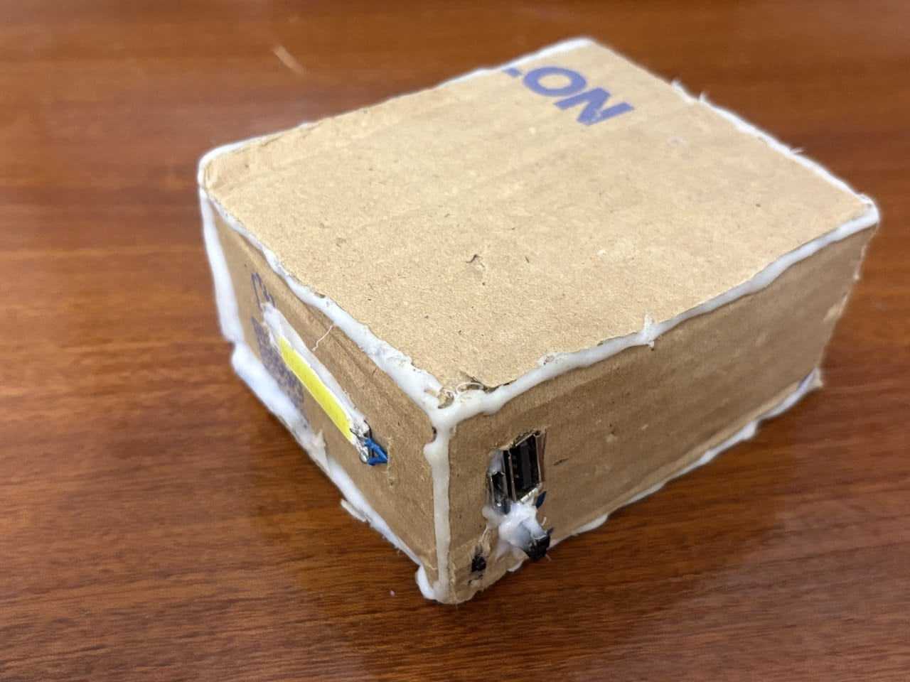
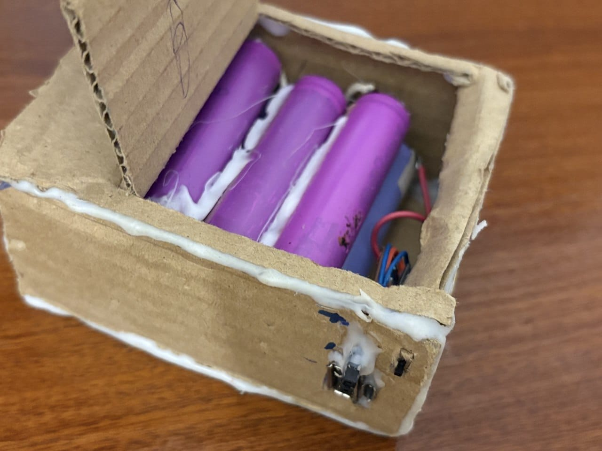
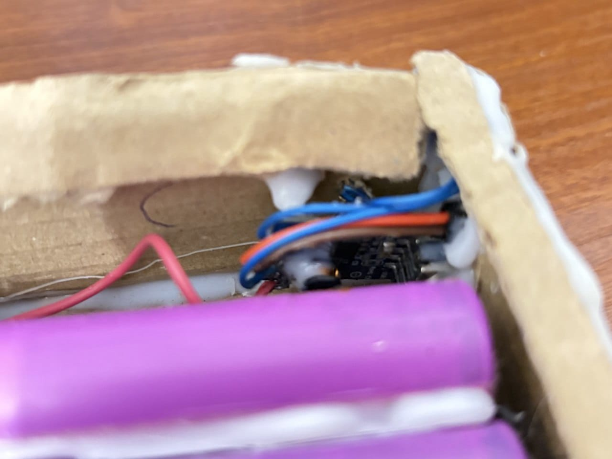

✓ Плюсы
- Два выхода подходят для питания макетных плат.
- Есть встроенный фонарик с отдельной кнопкой.
- Питание собрано в одном переносном корпусе.
Самодельный пауэрбанк для питания макетных плат и освещения.


Пауэрбанк собран в картонном корпусе на аккумуляторах 18650. В него добавлены два выхода с проводами «папа» для питания макетных плат и фонарик с мощным светодиодом от велофары.
Пауэрбанк
18650
Собран
2026
3,7 В
12 800 мА·ч
